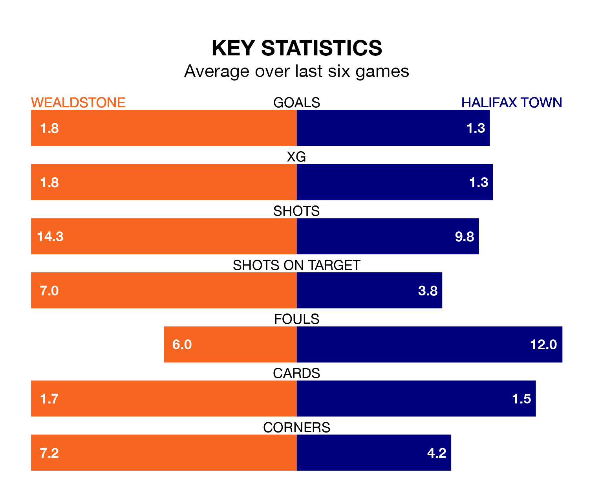

Halifax Town travel to Wealdstone on Saturday in National League.
The visitors come into the game on the back of a draw in their last match, having tied with Fylde 2-2 away, with goals from Florent Hoti and Jamie John Cooke.
Wealdstone, meanwhile, lost their last match, 2-0 against Ebbsfleet United.
In the last 10 years, Wealdstone and Halifax have played each other on seven occasions. Wealdstone won two of them and Halifax five.
On average, Wealdstone scored 0.4 goals and the Shaymen 1.6 in those matches.
Their last meeting was on November 18, when Halifax won 1-0 at home.
Halifax are ninth in the table after 28 games, of which they have won 10 and drawn 11, earning 41 points.
Wealdstone are five places behind Town in 14th, with nine wins and six draws putting them on 33 points.
With 32 goals in 28 games so far this season, the Shaymen are scoring at below the league average rate with 1.1 goals per game. But they are conceding fewer than average too, letting in 29 goals at a rate of 1.0 per game.
The home side are also below average scorers, with 1.4 goals per game, compared to a league average of 1.5. They have also conceded 1.4 goals per game.
Wealdstone are in mixed form in National League, with three wins and a draw from their last six games.
With two wins and three draws over that period, the visitors' form is slightly worse – they have taken nine points from 18, compared to Wealdstone's 10.
Updated: 09:07 (UTC), 24/01/24